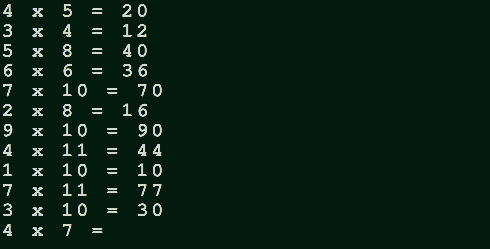

./code/multiplication/readme.txt
Here is a program that does a very simple but useful thing.
It quizzes you on the entire 1-12 multiplication table, and times you.
The more you practice, the quicker your time gets.
In python, the program is fewer than 20 lines long.
It stores each multiplication fact as a tuple, and stores all of them in a Set. The set is chosen here because every element is unique, and particularly because order does not matter. We want the cards to be scrambled. A set does not keep record of order, and when you call pop() on a set, there is no telling which of the elements will be removed. This is just how we want flashcards to behave : unpredictable.
It is a console program, which means it will be very fast. You can just run the file in a terminal with the command: python3 multiplication.py from the directory where it is saved. Or copy the code into your IDE and run it there. Study the program, and maybe even use it to practice your mutiplication table!
technical notes:
The call to time.time() returns the number of seconds since new year 1970. It may seem like a strange way to measure time, but that is how all computers are calibrated. The moment the function time.time() it returns the current time in seconds since 1970, so the number will be over one billion. That is fine, and we do not need to do any conversion, simply call time.time() again after the cards loop finishes, subtract the times, and you get how many seconds were in between, and that's the number to print().
./code/multiplication/multiply.py
import time
cards = set()
for i in range(1,13):
for j in range(i, 13):
cards.add( (i, j, i*j) )
start_time = time.time()
while cards: # while there are still cards left
a, b, answer = cards.pop()
prompt = str(a) + ' x ' + str(b) + ' = '
# setting initial false value to
# get the loop going:
my_answer = -1
while my_answer != str(answer):
my_answer = input(prompt)
time_taken = time.time() - start_time
print('It took you ', time_taken, ' seconds!')
print('Great job!')